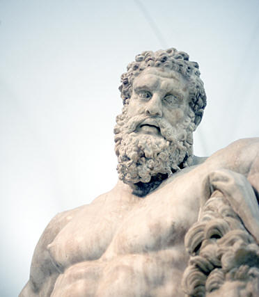

Citação do Livro XI (601) da Odisseia de Homero, quando Ulisses, no Hades, vê Héracles, ou melhor, a sua sombra — já que o verdadeiro Héracles é imortal e vive no Olimpo, casado com Hebe. Platão está pois a comparar a chegada de Sócrates à casa de Cálias com a de Ulisses ao Hades.
Num segundo momento, compara Hípias a Héracles. Há tres hipóteses interpretativas para esta comparação:
talvez Platão queira comparar os vários saberes de Hípias (polymathia), às várias tarefas de Héracles
talvez Platão queira introduzir a tema do hedonismo (351b-358d) por considerar Héracles o seu símbolo.
talvez esta referência signifique a redenção do estatuto de Hípias em relação aos restantes sofistas que estão presentes no “Hades” da casa de Cálias.
